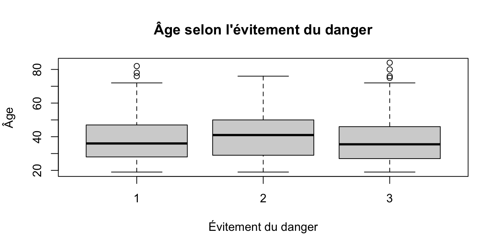

1 Introduction : en pratique, comment utiliser les tests statistiques ?
1.1 À quoi servent vraiment les tests statistiques ?
Les tests statistiques ont deux fonctions simultanées :
Outils d’inférence
Ils permettent de passer de ce qui est observé sur un échantillon à une affirmation sur une population plus large (effet d’un traitement, différence entre groupes, association entre variables).
Langage commun de la communauté scientifique
Ils fournissent un cadre standardisé (H0/H1, p-value, intervalles de confiance, seuils “significatifs”) qui permet de présenter des résultats de manière compréhensible et acceptable dans les revues.
Mais ce sont des outils inductifs, pas des démonstrations logiques :
Rejeter ou “accepter” H0/H1 ne prouve jamais qu’une hypothèse est vraie.
La p-value exprime à quel point les données sont compatibles avec H0, pas la probabilité que H0 soit vraie ou fausse.
La crédibilité scientifique d’un résultat dépend aussi de la théorie, de la littérature, du plan d’étude, et du bon sens clinique.
1.2 Quand l’usage est légitime
Un test statistique est pertinent quand il répond à une question scientifique centrale, formulée à l’avance :
Comparer un critère principal entre deux traitements dans un essai randomisé.
Tester l’association entre une exposition majeure (tabac, intervention chirurgicale) et un outcome clinique important (mortalité, complication grave).
Évaluer un effet que le chercheur est capable d’interpréter en termes cliniques ou de santé publique.
Dans ces situations :
L’hypothèse nulle H0 et l’hypothèse alternative H1 sont définies clairement.
Le test vient au service d’une question, et non l’inverse.
1.3 Mésusages fréquents (et pourquoi ils posent problème)
C’est surtout l’usage disproportionné des tests qui crée les dérives : on teste tout, partout, pour justifier des phrases qui n’ont pas besoin de test.
Test de normalité de Shapiro-Wilk
H0 : la variable suit une loi normale dans la population.
Si p > 0,05, la tentation est de conclure : « La variable est normale, donc on peut utiliser des tests paramétriques. »
Problèmes :
Avec un petit effectif, le test a peu de puissance : il ne rejette H0 que si la distribution est très clairement non normale.
Interpréter p > 0,05 comme “preuve de normalité” est faux : cela signifie juste qu’on n’a pas détecté d’écart flagrant avec la normale.
Avec un très gros effectif, le test peut donner p < 0,05 pour des écarts minimes, sans impact pratique.
Conclusion raisonnable :
p > 0,05 → “aucune incompatibilité majeure détectée avec la normalité, compte tenu de la taille de l’échantillon”.
Cela ne dispense pas de regarder un histogramme, un QQ-plot, et d’évaluer si un modèle gaussien est sensé dans le contexte.
Dire “Shapiro est non significatif, donc la variable est normale” est un mésusage.
Tester les caractéristiques des perdus de vue
Usage fréquent :
Comparer les patients perdus de vue à ceux qui restent dans l’étude (âge, sexe, gravité, etc.).
Si p > 0,05 partout → “les perdus de vue ne sont pas différents, donc ils ne posent pas de problème”.
Problèmes :
Là encore, p > 0,05 n’est pas une preuve d’égalité :
avec peu de perdus de vue, les tests manquent de puissance ;
des différences cliniquement importantes peuvent passer sous le radar.
Le mécanisme de perte de vue est souvent non testable (motifs non observés, biais de sélection).
Conclusion raisonnable :
Ces tests peuvent donner un indice (pas de différence massive détectée),
mais ne suffisent pas à conclure que les perdus de vue sont “neutres” pour l’analyse.
Batteries massives de tests exploratoires
Tester toutes les variables de base entre les bras d’un essai randomisé (alors que la randomisation rend ces tests conceptuellement inutiles).
Tester tous les sous-groupes, toutes les interactions, toutes les variables disponibles “pour voir ce qui sort”.
Retenir ensuite les résultats avec p < 0,05 comme s’il s’agissait de preuves robustes.
Problèmes :
Inflation du risque d’erreur de type I : plus il y a de tests, plus on obtient de “significatifs” par hasard.
Risque élevé de p-hacking : on sélectionne après coup ce qui donne un beau p.
1.4 Fil conducteur à retenir
Un test statistique doit être utilisé :
pour éclairer une question scientifique précise,
avec une hypothèse claire et une interprétation clinique possible.
Il ne doit pas servir :
à “prouver” que quelque chose est vrai ou normal (ex : Shapiro-Wilk),
à valider a posteriori des affirmations faibles ou secondaires,
ni à compenser l’absence de réflexion sur le plan d’étude.
Les tests sont un outil chiffré parmi d’autres au service du raisonnement scientifique, pas un substitut au raisonnement.
2 Quels tests pour quelles hypohèses ?
2.1 Comparaison de 2 pourcentages
2.1.1 Test du chi2 de Pearson
Le test du chi2 de Pearson compare la répartition de deux variables qualitatives (ex : présence/absence d’un événement dans deux groupes).
En fait : il teste l’indépendance entre deux variables qualitatives dans un tableau de contingence.
\(\chi^2 = \sum \frac{(O - E)^2}{E}\)
Plus le \(\chi^2\) est grand, plus les observations (O) s’éloignent des effectifs attendus sous H0 (E).
Conditions de validité :
Effectifs théoriques ≥ 5 dans chaque case du tableau de contingence.
Indépendance des observations = pas de mesures répétées, pas de données appariées.
Distribution appromiximativement chi2 sous H0 (c’est à dire une somme de carrés de lois normales centrées réduites).
Approximation de la loi binomiale par la loi normale
2.1.1.1 Chi2 R
dans l’étude smp : on teste l’hypothèse que le niveau de dépression est fonction de l’âge, avec âge binarisé pour > ou < 50 ans
Il est nécessaire de désactiver la correction de continuité de Yates (par défaut dans R) pour un test du chi2 classique
La correction du chi2 de Yates est une correction appliquée pour réduire le biais dans l’estimation du chi2 lorsque les effectifs sont petits.
Cependant, elle peut être trop conservatrice et diminuer la puissance du test.
L’avntage de cette approche est qu’elle est très simple à mettre en œuvre et à interpréter, et surtout elle affiche un message d’erreur si les conditions de validité ne sont pas remplies.
Outcome+ Outcome- Total Inc risk *
Exposure+ 379 105 484 78.31 (74.36 to 81.90)
Exposure- 267 46 313 85.30 (80.89 to 89.04)
Total 646 151 797 81.05 (78.16 to 83.72)
Point estimates and 95% CIs:
-------------------------------------------------------------------
Inc risk ratio 0.92 (0.86, 0.98)
Inc odds ratio 0.62 (0.43, 0.91)
Attrib risk in the exposed * -7.00 (-12.37, -1.62)
Attrib fraction in the exposed (%) -8.94 (-16.30, -1.83)
Attrib risk in the population * -4.25 (-9.02, 0.52)
Attrib fraction in the population (%) -5.24 (-6.35, -3.49)
-------------------------------------------------------------------
Uncorrected chi2 test that OR = 1: chi2(1) = 6.061 Pr>chi2 = 0.014
Fisher exact test that OR = 1: Pr>chi2 = 0.016
Wald confidence limits
CI: confidence interval
* Outcomes per 100 population units
Important
Le test du chi2 teste l’hypothèse d’indépendance entre deux variables qualitatives.
Ca revient exactement au même de tester l’hypothèse que l’OR = 1 dans un tableau de contingence 2x2.
Donc la p-value du chi2 et celle du test “OR = 1” sont identiques.
2.1.2 Test exact de Fisher
Le test exact de Fisher compare la répartition de deux variables qualitatives dans des petits échantillons (ex : présence/absence d’un événement dans deux groupes).
Conditions de validité :
Effectifs théoriques < 5 dans au moins une case du tableau de contingence.
Indépendance des observations = pas de mesures répétées, pas de données appariées.
2.1.2.1 Fisher R
fisher.test(smp$age>75, smp$depression)
Fisher's Exact Test for Count Data
data: smp$age > 75 and smp$depression
p-value = 0.7104
alternative hypothesis: true odds ratio is not equal to 1
95 percent confidence interval:
0.05833312 3.79332074
sample estimates:
odds ratio
0.6164281
La p value du test vaut 0,71.
On aurait pu aussi faire ça avec d’autres foncions :
2 missing rows in the "age75" column have been removed.
Characteristic
<=75
N = 790
>75
N = 7
p-value
depression
311 / 790 (39%)
2 / 7 (29%)
0.7
1 n / N (%)
2 Fisher's exact test
2.2 Comparaison d’un pourcentage a un pourcentage théorique
Situation peu fréquente !
Par exemple : équiprobabilité de naissance entre garçons et filles (50%)
binom.test(538, 1000, p =0.5)
Exact binomial test
data: 538 and 1000
number of successes = 538, number of trials = 1000, p-value = 0.01766
alternative hypothesis: true probability of success is not equal to 0.5
95 percent confidence interval:
0.5065264 0.5692493
sample estimates:
probability of success
0.538
p-value = 0.01766 : on rejette l’hypothèse d’équiprobabilité.
2 missing rows in the "age.t" column have been removed.
Characteristic
(-Inf,25]
N = 140
(25,50]
N = 506
(50, Inf]
N = 151
p-value
depression
65 / 140 (46%)
202 / 506 (40%)
46 / 151 (30%)
0.018
1 n / N (%)
2 Pearson's Chi-squared test
Le problème pour interpréter cette p-value :
On sait qu’il y a une différence entre au moins deux groupes d’âge, mais on ne sait pas lesquels.
On sait en gros que l’hypothèse \(p_1 = p_2 = p_3\) est fausse, mais on ne sait pas quelles sont les paires pour lesquelles \(p_i \ne p_j\).
Dans cette situation : il faut utiliser un test Chi2 de tendance :
num <- tb[ ,2]den <- tb[ ,1] + tb[ ,2] # on aurait pu faire rowSums(tb)prop.trend.test(num, den)
Chi-squared Test for Trend in Proportions
data: num out of den ,
using scores: 1 2 3
X-squared = 7.84, df = 1, p-value = 0.00511
La p value est < 0,05 : on rejette l’hypothèse d’égalité des proportions en fonction de l’âge.
Il y a donc une tendance significative de la proportion de dépression en fonction de l’âge.
On peut aussi faire ça avec le package gtsummary mais il faut définir une fonction de test personnalisée ce qui n’est pas dingo quand même !
trend_test <-function(data, variable, by, ...) { tab <-table(data[[by]], data[[variable]]) # lignes = âge, colonnes = depression# on teste la tendance des proportions de "depression = 1" selon l'âge res <-prop.trend.test(x = tab[, "1"], n =rowSums(tab)) dplyr::tibble(p.value = res$p.value)}tableau_trend <- smp %>%tbl_summary(by = age.t,include = depression,statistic =all_categorical() ~"{n} / {N} ({p}%)",percent ="column",missing ="no" ) %>%add_p(test = depression ~"trend_test" )
2 missing rows in the "age.t" column have been removed.
Characteristic
(-Inf,25]
N = 140
(25,50]
N = 506
(50, Inf]
N = 151
p-value
depression
65 / 140 (46%)
202 / 506 (40%)
46 / 151 (30%)
0.005
1 n / N (%)
2.4 Comparaison de 2 moyennes
Repose sur :
le test t de Student pour échantillons indépendants (ou appariés)
le test de Welch (var.equal=FALSE dans R)
le test t de Student pour échantillons appariés (paired=TRUE dans R)
le test non paramétrique de Wilcoxon :
test de Mann-Whitney pour échantillons indépendants
test de Wilcoxon pour échantillons appariés
Test t de student pour échantillons indépendants
Conditions de validité :
Variable quantitative continue approximativement normale dans chaque groupe (mais en vrai s’il y a plus de 30 sujets par groupe, on peut s’en fiche un peu)
Homogénéité des variances dans chaque groupe (c’est à dire que les variances sont à peu près similaires)
Pour apprécier la comparabilité des variances :
diagramme de normalité (= QQ plot) (voir qqnorm et qqline en R) dans chaque groupe ou courbe de densité superposée à la loi normale (voir density et lines en R)
calcul des écarts-types dans chaque groupe (by(var1, var2, sd, na.rm=TRUE) en R)
test de Levene : bof bof parce que c’est comme Shapiro : si p > 0,05 on conclut que les variances sont égales (ce qui n’est pas une preuve !) et si p < 0,05 on conclut que les variances sont différentes (ce qui peut être dû à un petit échantillon
Si les variances ne sont vraiment pas égales : utiliser le test de Welch (var.equal=FALSE dans R)
Conditions de validité :
déjà : avec n>30 par groupe, on s’en fiche un peu !! (sauf si différence ÉNORME de taille entre les groupes)
si < 30 mais les groupes ont à peu près les mêmes effectifs + les mêmes distributions (11 et 13 sujets, écarts types similaires) : on peut s’en fiche aussi
la validité est douteuse si taille inégale ou distribution très différentes (30 vs 300 sujets, CRP négative vs 250 mg/L)
Si c’est vraiment très éloigné d’une distribution normale (comme le nombre d’enfants) : utiliser un test non paramétrique (Wilcoxon)
Note
Wilcoxon / Mann Withney
Wilcoxon (wilcox.test en R)
peut être apparié → paired = TRUE (Wilcoxon signed‑rank)
ou non apparié → paired = FALSE (Mann‑Whitney / Wilcoxon rank‑sum)
Mann‑Whitney au sens strict
c’est la version non appariée seulement
pour deux groupes indépendants.
sur R : wilcox.test(var1 ~ var2, data=..., paired=FALSE)
2.4.0.1 Comparaison de 2 moyennes avec R
On teste l’
hypothèse : moyenne d’âge des détenus déprimés est différente de la moyenne d’âge des détenus non déprimés
t.test(smp$age ~ smp$depression, var.equal=TRUE)
Two Sample t-test
data: smp$age by smp$depression
t = 2.6337, df = 795, p-value = 0.008611
alternative hypothesis: true difference in means between group 0 and group 1 is not equal to 0
95 percent confidence interval:
0.6425038 4.4032412
sample estimates:
mean in group 0 mean in group 1
39.93182 37.40895
La p value est de 0,0086 : on rejette l’hypothèse d’égalité des moyennes d’âge entre les deux groupes.
maginons maintenant que nous souhaitions comparer le nombre d’enfants des détenus selon qu’ils aient ou non été abusés dans leur enfance. Malgré la taille importante de l’échantillon, le fait que la distribution du nombre d’enfants soit très éloignée d’une distribution normale peut nous rendre réticent à l’idée d’utiliser un test t. L’alternative est alors de recourir à un test non paramétrique comme le test de Wilcoxon ou de Mann-Whitney
Si on veut comparer le nombre d’enfants entre les deux groupes de détenus (abusés ou non dans leur enfance) :
La distribution du nombre d’enfants est très asymétrique (beaucoup de zéros, quelques valeurs élevées)
\(\rightarrow\) on utilise un test non paramétrique = test de Wilcoxon / Mann-Whitney (en l’occurence Mann Whitney car les deux groupes sont indépendants)
Wilcoxon rank sum test
data: smp$nb.enfants by smp$abus.enfant
W = 62664, p-value = 0.1938
alternative hypothesis: true location shift is not equal to 0
NB : si on voulait en faisant paired = TRUE, il faut passer la syntaxe en mode vecteur (mais ça ne marcherait pas ici car les deux groupes ne sont pas appariés et donc n’ont pas le même effectif) :
x <- smp$nb.enfants[smp$abus.enfant ==0] # groupe 0y <- smp$nb.enfants[smp$abus.enfant ==1] # groupe 1wilcox.test(x, y, paired =TRUE, correct =FALSE)
Important
Résumé des tests de comparaison de moyennes
Comparaison de moyennes avec test t de Student :
Effectif : > 30 par groupe ou à peu près égaux (11 et 12 par exemple)
Distribution : symétrique (approximativement normale) et variances à peu près égales
Si échantillons appariés : test t apparié, ou Wilcoxon apparié (= signed rank)
Si distribution très asymétrique : test non paramétrique de Mann-Whitney (= Wilcoxon non apparié = rank sum)
Si effectifs très inégaux ou variances très différentes : test de Welch
2.5 Comparaison de 3 moyennes ou plus
Comparaison pas si fréquente (idem que la comparaison de 3 pourcentages).
Faire un test pour rejeter l’hypothèse \(\mu_1 = \mu_2 = \mu_3\) a peu de sens !
Le test ANOVA (Analysis of Variance) permet de comparer les moyennes de plusieurs groupes (3 ou plus).
Si une variable à une distribution égale dans les 3 sous groupes, alors la variacnce intra-groupe doit être proche de la variance inter-groupe.
On passe par la comparaison des variances car on ne peut pas faire de comparaison directe des moyennes quand il y a plus de 2 groupes.
Le test ANOVA calcule le ratio de ces variances (F-statistique) et détermine la p-value associée en fonction de la distribution de F.
\[
F = \frac{\text{Variance inter-groupe}}{\text{Variance intra-groupe}}
\]
On calcule la variance des hauteurs entre les groupes (inter-groupe) et la variance des hauteurs à l’intérieur de chaque groupe (intra-groupe).
Si les traitements n’ont pas d’effet, les variances inter et intra-groupe sont similaires.
Si un traitement a un effet, la variance inter-groupe sera plus grande que la variance intra-groupe.
Conditions de validité :
Indépendance des observations (pas de mesures répétées, pas de données appariées).
Variance de la variable étudiée similaire dans chaque groupe (homoscédasticité).
Normalité des résidus du modèle (avec la même résistance que pour le test t : si n>30 par groupe et faible différences des deux groupes, on peut s’en fiche un peu).
2.5.1 Exemple R
Exemple : niveau d’évitement du danger mesuré avec un questionnaire codée en 1, 2 et 3 pour des niveaux respectivement « faible », « modéré » ou « élevé ».
Il faut réfuter l’hypothèse que la moyenne d’âge est la même dans les trois groupes d’évitement du danger.
D’abord visualisation :
boxplot(age ~ evit.danger, data = smp,xlab ="Évitement du danger",ylab ="Âge",main ="Âge selon l'évitement du danger")

Les moyennes et écart-types d’âge semblent visuellement proches dans les trois groupes
Sur R, il faut passer par la fonction lm (linear model) pour faire une ANOVA :
Attention, il faut bien transformer la variable catégorielle en facteur avec as.factor() (sinon R la traite comme une variable quantitative continue !)
Syntaxe :
lm(var_quantitative ~ var_catégorielle, data=...)
test : fonction anova(...) ou drop1(..., test="F")
La fonction drop1 permet de tester l’effet d’une variable dans un modèle linéaire en comparant le modèle complet avec un modèle réduit (sans la variable testée).
res <-lm(age~as.factor(evit.danger), data=smp)drop1(res, test="F")
Single term deletions
Model:
age ~ as.factor(evit.danger)
Df Sum of Sq RSS AIC F value Pr(>F)
<none> 122212 3582.2
as.factor(evit.danger) 2 1062.1 123274 3584.2 2.9895 0.05097 .
---
Signif. codes: 0 '***' 0.001 '**' 0.01 '*' 0.05 '.' 0.1 ' ' 1
# ou anova(res)anova(res)
Analysis of Variance Table
Response: age
Df Sum Sq Mean Sq F value Pr(>F)
as.factor(evit.danger) 2 1062 531.04 2.9895 0.05097 .
Residuals 688 122212 177.63
---
Signif. codes: 0 '***' 0.001 '**' 0.01 '*' 0.05 '.' 0.1 ' ' 1
Note
Lien entre ANOVA et régression linéaire
Fondamentalement, l’ANOVA et la régression linéaire sont la même méthode mathématique (elles appartiennent toutes deux au “Modèle Linéaire Général”).
La différence est dans leur application :
L’ANOVA est un cas particulier de régression utilisée quand les variables explicatives sont uniquement des catégories (des groupes comme “Engrais A, B, C”). Elle regarde si les moyennes de ces catégories diffèrent.
La Régression Linéaire est plus souple et permet d’utiliser des variables explicatives continues (des nombres comme la température ou l’âge) pour prédire une valeur.
En résumé : faire une ANOVA revient exactement à faire une régression linéaire sur des variables catégorielles (transformées en variables “muettes” ou dummy variables).
Elles utilisent toutes les deux le même moteur : analyser la variance pour séparer le signal du bruit.
2.6 Test de nullité d’un coefficient de corrélation
Les coefficients de corrélation mesurent la force et la direction d’une association linéaire entre deux variables quantitatives.
Ils peuvent être :
Coefficient de corrélation de Pearson (r) : mesure la corrélation linéaire entre deux variables quantitatives continues. Varie entre -1 et +1.
Coefficient de corrélation de Spearman (ρ) : mesure la corrélation monotone entre deux variables, basé sur les rangs. Varie entre -1 et +1.
Coefficient kappa de Cohen (κ) : mesure l’accord entre deux évaluateurs pour des variables qualitatives. Varie entre -1 et +1.
Coefficient de corrélation intraclasse (ICC) : mesure la fiabilité entre plusieurs mesures quantitatives. Varie entre 0 et 1.
Tester la nullité de corrélation revient à tester l’absence d’association linéaire entre les variables, c’est à dire leur indépendance linéaire.
(2 variables indépendantes ont nécessairement une absence de corrélation linéaire)
Attention : tester la nullité d’une corrélation n’implique pas que le coefficient de corrélation soit = 0 !
Attention aussi aux conditions de validité des coefficients
Attention aussi aux conditions de validité du test de nullité
Dans l’idéal : que \(X\) et \(Y\) soient distribuées normalement dans la population
Faisable quand même si \(X\) est normale et \(Y\) est binaire
Et même si les deux sont binaires !
2.6.1 Test de nullité du coefficient de corrélation avec R
Pearson's product-moment correlation
data: smp$age and smp$recherche.nouv
t = -6.009, df = 693, p-value = 3.016e-09
alternative hypothesis: true correlation is not equal to 0
95 percent confidence interval:
-0.2920740 -0.1506631
sample estimates:
cor
-0.2225387
Corrélation négative à -0,22 entre âge et recherche de nouveauté.
p-value < 0,0001 : on rejette l’hypothèse d’absence de corrélation linéaire entre âge et recherche de nouveauté : il est très peu probable que les variables soient indépendantes linéairement.
Paired t-test
data: scl.w$J0 and scl.w$J4
t = 6.2146, df = 99, p-value = 1.223e-08
alternative hypothesis: true mean difference is not equal to 0
95 percent confidence interval:
3.172146 6.147854
sample estimates:
mean difference
4.66
p-value = 1.223e-08 : on rejette l’hypothèse d’égalité des moyennes de score SCL90 entre le jour 0 et le jour 4.
2.7.1.2 Exemple 2
Comparaison de pourcentages = test du Chi2 de McNemar
Ici, on teste l’hypothèse que la proportion de patients déprimés (score SCL90 > 20) est la même au jour 0 et au jour 4.
p-value = 6.334e-05 : on rejette l’hypothèse d’égalité des proportions de patients déprimés entre le jour 0 et le jour 4.
2.7.1.3 tbl_summary apparié
On met les deux : comparaison de moyennes et comparaison de pourcentages
Après PSM :
table3adjusted <- m.final %>%tbl_summary(include =all_of(cols_to_include_in_table3),missing ="ifany",by = I_geste_comparaison_1HartmannCoelio, # Comparaison entre groupespercent ="column",statistic =list(all_categorical() ~"{n} ({p}%)",all_continuous() ~"{median} [{p25}, {p75}]" ) ) %>%add_p(test =list(all_continuous() ~"paired.wilcox.test", # Test de Wilcoxon pour les donnees continuesall_categorical() ~"mcnemar.test"# Test de McNemar pour les donnees categoriques ),group = Pair_ID # Utilisation de l'ID de paire )
Mais selon chat, utilisation de group = Pair_ID n’est pas très safe et conseille de faire comme ça :
Fonction Wilcoxon apparié personnalisée
paired_wilcox_gts <-function(data, variable, by, ...) { d <- data |> dplyr::select(Pair_ID, all_of(by), all_of(variable)) |> tidyr::pivot_wider(names_from =!!rlang::sym(by),values_from =!!rlang::sym(variable) ) res <-wilcox.test(d[[1]], d[[2]], paired =TRUE) tibble::tibble(p.value = res$p.value) }
Fonction McNemar personnalisée
mcnemar_gts <-function(data, variable, by, ...) { d <- data |> dplyr::select(Pair_ID, all_of(by), all_of(variable)) |> tidyr::pivot_wider(names_from =!!rlang::sym(by),values_from =!!rlang::sym(variable) ) tab <-table(d[[1]], d[[2]]) res <-mcnemar.test(tab, correct =FALSE) tibble::tibble(p.value = res$p.value) }
Fonction t de Student apparié personnalisée
paired_ttest_gts <-function(data, variable, by, ...) { d <- data %>% dplyr::select(Pair_ID, !!rlang::sym(by), !!rlang::sym(variable)) %>% tidyr::pivot_wider(names_from =!!rlang::sym(by),values_from =!!rlang::sym(variable) ) res <-t.test(d[[1]], d[[2]], paired =TRUE) tibble::tibble(p.value = res$p.value) }
3 Calcul de \(\beta\) et du nombre de sujets à inclure
Dans la théorie de Neyman et Pearson, le calcul du nombre de sujets à inclure dans une étude est directement lié au contrôle des risques \(\alpha\) et \(\beta\).
Exemple : équiprobabilité des naissances de garçons (\(p_1\)) et de filles (\(p_2\))
\(H_0\) : \(p_1 = 0,5\) (et donc \(p_2 = 0,5\) également)
\(H_1\) : \(p_1 = 0,55\) (et donc \(p_2 = 0,45\))
Pour \(\alpha\) fixé (par exemple à 5%), on peut déterminer une règle de décision (seuil critique) qui permet de rejeter \(H_0\) si le pourcentage de naissances de garçons est suffisamment éloigné de 50%.
\(\beta\) varie
la différence vraie : Plus l’effet réel est grand, plus il est facile à détecter, donc \(\beta\) diminue (et la puissance augmente).
le nombre de sujets inclus : Plus on inclut de sujets, plus on a d’informations, donc \(\beta\) diminue (et la puissance augmente).
\(H_1\) choisi : plus \(H_1\) est proche de \(H_0\), plus il est difficile de détecter la différence, donc \(\beta\) augmente (et la puissance diminue).
Exemple :
hypothèse \(p_1 = 0,55\)\(\rightarrow\) pour \(\alpha = 5\%\) et \(\beta = 10\%\)
proportion power calculation for binomial distribution (arcsine transformation)
h = -0.1001674
n = 853.5244
sig.level = 0.05
power = 0.9
alternative = less
Pour \(p_1 = 0,55\), il faut environ 850 naissances pour obtenir une puissance de 90% avec un risque \(\alpha\) de 5%.
hypothèse \(p_1 = 0,60\)\(\rightarrow\) pour \(\alpha = 5\%\) et \(\beta = 10\%\)
proportion power calculation for binomial distribution (arcsine transformation)
h = -0.2013579
n = 211.2183
sig.level = 0.05
power = 0.9
alternative = less
Pour \(p_1 = 0,60\), il faut environ 200 naissances pour obtenir une puissance de 90% avec un risque \(\alpha\) de 5%.
hypothèse \(p_1 = 0,52\)\(\rightarrow\) pour \(\alpha = 5\%\) et \(\beta = 10\%\)
proportion power calculation for binomial distribution (arcsine transformation)
h = -0.04001067
n = 5349.549
sig.level = 0.05
power = 0.9
alternative = less
Pour \(p_1 = 0,52\), il faut environ 5000 naissances pour obtenir une puissance de 90% avec un risque \(\alpha\) de 5%.
3.1 Exemple R
enons l’exemple d’un essai évaluant l’efficacité d’une nouvelle molécule dans le sepsis sévère (étude comparative versus placebo). Compte tenu des critères d’inclusion, les données épidémiologiques font état d’une mortalité à 30 jours (critère d’efficacité) égale à 36%.
Exemple : efficacité d’une nouvelle molédcule.
\(H_0\) : mortalité = 36% (placebo)
Investigateurs : “ne pas passer à côté d’une baisse de 10 points de la mortalité”
\(H_1\) : mortalité = 26% (nouvelle molécule)
\(\alpha\) = 5% (risque de conclure à tort que la molécule est efficace)
\(\beta\) = 10% (risque de ne pas détecter l’efficacité de la molécule)
La fonction pwr.2p.test du package pwr permet de calculer le nombre de sujets nécessaires pour atteindre la puissance désirée dans une étude comparant deux proportions.
Difference of proportion power calculation for binomial distribution (arcsine transformation)
h = 0.2168606
n = 446.8531
sig.level = 0.05
power = 0.9
alternative = two.sided
NOTE: same sample sizes
Il faut donc inclure environ 447 patients par groupe (soit un total de 894 patients) pour détecter une différence de mortalité de 10 points entre les deux groupes avec une puissance de 90% et un risque \(\alpha\) de 5%.
4 Tests uni- ou bilatéraux ?
4.1 Définitions
Selon Fisher :
inférence statistique bilatérale par nature
on cherche à apprécier l’adéquation entre un échantillon observé et une population hypothétique infinie sous-jacente.
donc on teste toujours si l’estimateur issu de l’échantillon est suffisamment différent du paramètre de la population sous-jacente (qu’il soit supérieur ou inférieur).
Selon Neyman et Pearson :
inférence statistique unilatérale inférieure ou supérieure selon le choix des hypothèses \(H_0\) et \(H_1\).
4.2 Exemple
Essai randomisé : on teste
\(H_0\) : la nouvelle thérapeutique n’est pas plus efficace que le placebo
\(H_1\) : la nouvelle thérapeutique est plus efficace que le placebo
Mais on teste pas l’infériorité de la nouvelle thérapeutique par rapport au placebo.
Donc en soit, c’est un test unilatéral supérieur, et le risque de première espèce \(\alpha\) est à 2,5% (et non 5%).
Étude d’inférence inductive : on teste
Formulation bilatéral
Avec le risque de première espèce \(\alpha\) égal à 5%.
5 Intervalles de confiance
5.1 Définitions
“Vraie valeur” de la moyenne = espérance de la moyenne =
\[
\mu \text{ +/- } \frac{\sigma}{\sqrt{n}}
\]
Avec : \(\sigma\) = écart-type de la population et \(n\) = taille de l’échantillon
En fait :
Si âge : 40 [37-43] ans dans un échantillon de 100 personnes
C’est l’intervalle de confiance qui a 95% de chances de contenir la vraie valeur de la moyenne d’âge dans la population.
et pas “il y a 95% des valeurs de l’échantillon qui sont entre 37 et 43 ans”.
L’intervalle de confiance à 95% correspond à la grande majorité (95%) des valeurs théoriques possibles de ce paramètre, compatibles avec l’échantillon observé.
Pour observer les fluctuations de l’estimation d’un paramètre dans un échantillon donné, il faut utiliser les intervalles empiriques ou les intervalles de fluctuation.
En gardant à l’esprit que les observations sont considérées implicitement comme un échantillon aléatoire issu d’une population sous-jacente alors que ça n’est que rarement le cas dans les faits !
5.2 Exemple R
Prévalence de la schizophrénie dans l’étude smp.
FOnction binom.confint() de la bibliothèque binom de R permet d’estimer la prévalence et un intervalle de confiance.
y <-na.omit(smp$schizophrenie)binom.confint(x=sum(y), n=length(y), method="asymptotic")
method x n mean lower upper
1 asymptotic 64 799 0.08010013 0.06127831 0.09892194
cat("Prévalence de la schizophrénie : ",round(binom.confint(x=sum(y), n=length(y), method="asymptotic")$mean*100,2),"% [",round(binom.confint(x=sum(y), n=length(y), method="asymptotic")$lower*100,2),"% ; ",round(binom.confint(x=sum(y), n=length(y), method="asymptotic")$upper*100,2),"%]" )
Prévalence de la schizophrénie : 8.01 % [ 6.13 % ; 9.89 %]
Donc l’échantillon observé est compatible avec des populations infinies sous-jacentes pour lesquelles la « vraie » prévalence de schizophrénie serait comprise entre 6,1% et 9,9%.
Le truc c’est qu’on a fait un sondage en grappe, donc il faut utiliser la bibliothèque survey de R pour calculer un intervalle de confiance correct.
smp.design <-svydesign(ids=~1, data=smp)
Warning in svydesign.default(ids = ~1, data = smp): No weights or probabilities
supplied, assuming equal probability